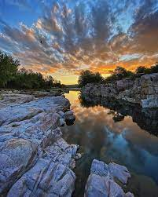
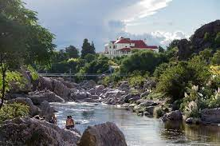

A 160 Km aproximadamente de la ciudad de Córdoba capital, cruzando el imponente camino de las Altas Cumbres, se encuentra Mina Clavero. Un pueblo que atrae y cautiva a sus visitantes por sus inigualables ríos que forman 14 km de playa de arena y piedra, pequeñas cascadas, balnearios y ollas naturales. Los ríos son el gran atractivo de Mina.
El Panaholma y el Mina Clavero dan origen a numerosos balnearios naturales. Aguas abajo, en el límite con Villa Cura Brochero, ambos se unen dando nacimiento al Río de los Sauces; de amplias playas de arena fina que se suceden a lo largo de todo su curso hasta desembocar en el Dique La Viña.
El turismo es la principal actividad de desarrollo y ofrece todos los servicios necesarios para disfrutar de las mejores vacaciones. Establecimientos gastronómicos, diversidad de alojamientos, casino, bingo y discotecas le otorgan un estilo muy particular.
